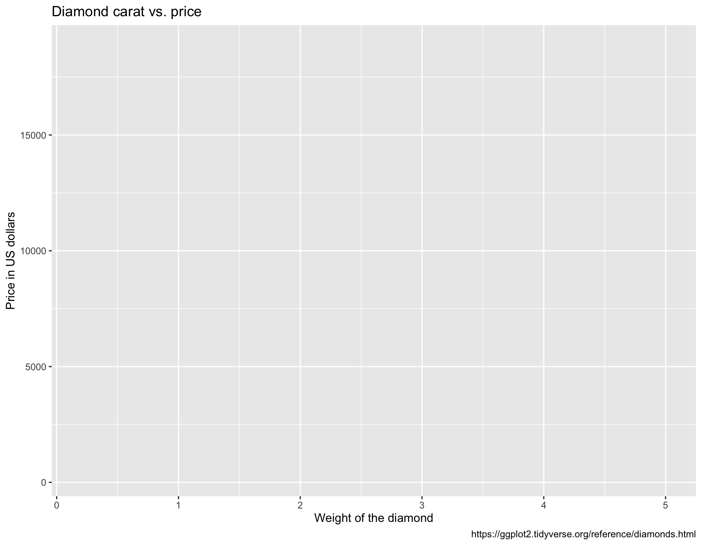
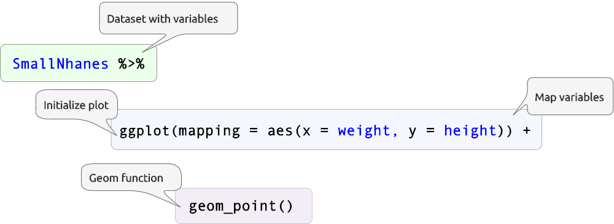

This document outlines and introduction to data visualization with ggplot2. The objectives for this section are:
Explain the problem having a Grammar of Graphics solves
Define the terms geom, aesthetic and layer
Understand the ggplot2 graph template, and how to use it to build a variety of graphs
Recognize the differences between global and local aesthetic mappings and mapping and setting aesthetic attributes
View the slides for this section here.
View the exercises for this section here.
You might want to check out the Data Transformation and Tidy Data chapters of R for Data Science.
The main packages we’re going to use are ggplot2, dplyr, and tidyr. These are all part of the tidyverse, so we’ll import this package below:
install.packages("tidyverse")
library(tidyverse)For this section, we’re going to be using the datasets in the ggplot2 package. Normally we import data ‘in the wild’, but for these examples we want to focus on the ggplot2 grammar, not necessarily the data processing/wrangling steps.
We’re going to start with the ggplot2::diamonds dataset. This contains `A dataset containing the prices and other attributes of almost 54,000 diamonds.
Use dplyr::glimpse(), utils::head(), and utils::tail(), to view the diamonds dataset.
dplyr::glimpse(________)
utils::____(ggplot2::diamonds)
utils::____(ggplot2::diamonds)See the solution below:
dplyr::glimpse(ggplot2::diamonds)## Rows: 53,940
## Columns: 10
## $ carat <dbl> 0.23, 0.21, 0.23, 0.29, 0.31, 0.24, 0.24, …
## $ cut <ord> Ideal, Premium, Good, Premium, Good, Very …
## $ color <ord> E, E, E, I, J, J, I, H, E, H, J, J, F, J, …
## $ clarity <ord> SI2, SI1, VS1, VS2, SI2, VVS2, VVS1, SI1, …
## $ depth <dbl> 61.5, 59.8, 56.9, 62.4, 63.3, 62.8, 62.3, …
## $ table <dbl> 55, 61, 65, 58, 58, 57, 57, 55, 61, 61, 55…
## $ price <int> 326, 326, 327, 334, 335, 336, 336, 337, 33…
## $ x <dbl> 3.95, 3.89, 4.05, 4.20, 4.34, 3.94, 3.95, …
## $ y <dbl> 3.98, 3.84, 4.07, 4.23, 4.35, 3.96, 3.98, …
## $ z <dbl> 2.43, 2.31, 2.31, 2.63, 2.75, 2.48, 2.47, …utils::head(ggplot2::diamonds)utils::tail(ggplot2::diamonds)ggplot2Within the tidyverse, the ggplot2 package provides a grammar (or set of rules) to develop a rich vocabulary for building data visualizations. Knowing how to use ggplot2’s grammar also gives us an excellent mental model for thinking about individual graphical elements.
The geom (or geometric object) is the fundamental building block in the ggplot2 language. geoms are the shape or element we will see on the graph or plot, and include things like points or lines, bars, etc. geoms also have aesthetic mappings, which are visual properties of the shape on the plot or graph (i.e. the color of the point, the size of the lines, the position or shape of the bars, etc.).
So every graph or plot has a geom, and all geoms will also have some visual properties called aesthetics.
Use the pipe syntax below to apply the ggplot2::ggplot() and ggplot2::aes() functions to the WikiCovid data.
diamonds %>%
ggplot2::_______(ggplot2::___())See the solution below:
diamonds %>%
ggplot2::ggplot(ggplot2::aes())When we combine a dataset with the ggplot2::ggplot() and ggplot2::aes() functions, we get a blank canvas. This is the base layer for ggplot2 graphs. Next we will see what happens when we ‘map’ variables to their respective positions (x and y).
I strongly suggest building labels first when making a figure or graph because it forces us to think about what we should expect to see. For example, if we want to see price on the y and carat on the x, we can create these labels (along with a title and caption) using the ggplot2::labs() function below.
Note the use of the paste0() function to ensure the date matches the same day we scraped the data.
labs_caratVSprice <- ggplot2::labs(
title = "Diamond carat vs. price",
caption = "https://ggplot2.tidyverse.org/reference/diamonds.html",
x = "Weight of the diamond",
y = "Price in US dollars")Now we can refer to the labels to add the variables to our existing canvas.
We’re going to take the diamonds dataset, and pipe (%>%) it over to the ggplot() and aes() function (short for aesthetics). This ‘initializes’ the ggplot2 plot, and the aes() function tells ggplot2 which variables we want ‘mapped’ to each location or position aesthetic.
See the example below:
Structuring the code this way makes it easier to separate the input dataset (DataSet) from the code that initializes the plot (ggplot(aes())). In the future, this comes in handy if we want to manipulate the data before creating a graph.
Use the labels to guide you in filling in the aes() function below:
diamonds %>%
ggplot2::ggplot(ggplot2::aes(x = _____, y = ______)) See the solution below:
diamonds %>%
ggplot2::ggplot(ggplot2::aes(x = carat, y = price))+Up to this point, we’ve been using the pipe (%>%) to combine function calls into clear, readable, linear code ‘pipelines’. ggplot2 deviates from this syntax and uses the + symbol for adding layers to plot objects. This can be confusing at first, but it becomes clear as soon as you identify where the plot is initialized.
We currently have a dataset (diamonds) and a label object in our working environment (labs_caratVSprice). If we check the structure at each step, we can see where the plot’s been created (and it’s appropriate to use the + symbol).
# use class() to check what is being 'piped' to ggplot(aes()):
diamonds %>% class()## [1] "tbl_df" "tbl" "data.frame" # ggplot2::ggplot(ggplot2::aes(x = carat, y = price))diamonds %>%
# add class() to check what's being created here:
ggplot2::ggplot(ggplot2::aes(x = carat, y = price)) %>% class()## [1] "gg" "ggplot"Initializing the plot creates a gg or ggplot object, which requires us to use the + symbol to add layers. The label object is designed to work specifically with gg/ggplot objects, which we can see with the class() function:
class(labs_caratVSprice)## [1] "labels"Add the label object labs_caratVSprice to the code below to assign put labels on the graph object.
diamonds %>%
ggplot2::ggplot(ggplot2::aes(x = carat, y = price)) _ # <- use the appropriate symbol!
_______________See the solution below:
diamonds %>%
ggplot2::ggplot(ggplot2::aes(x = carat, y = price)) +
labs_caratVSprice
This is starting to look more like a graph! We have the x and y axis defined, the title tells us what we should expect to see, and the caption gives us a clue to the data source.
Now that we have price and carat mapped to their respective aesthetic positions, we will add another geom layer. Layers are to ggplto2 graphs what sentences are to paragraphs, We construct sentences with verbs and nouns, and separate them with punctuation. Layers are built using geoms and aesthetics, and we separate these layers using the + symbol.
Add the geom_point() to the code below, before the labels:
diamonds %>%
ggplot2::ggplot(ggplot2::aes(x = carat, y = price)) +
_________() +
labs_caratVSpriceSee the solution below:
diamonds %>%
ggplot2::ggplot(ggplot2::aes(x = carat, y = price)) +
ggplot2::geom_point() +
labs_caratVSpriceThere we have it! Our first graph! Now we’re going to add a few more aesthetics like color and size.
ggplot2: A templateWe’ve just built our first graph with ggplot2, so lets take a second to see what we’ve learned:
diamonds)ggplot() and aes() to initialize the plot objectx and y)geom_point())We can make abstract each step and come up with the following template:

As you can see, the geom functions come with their own set of aesthetic mappings, which we will explore next. But first, we need to cover the difference between mapping aesthetics globally vs. mapping variables locally.
When we mapped carat and price to the x and y axis inside ggplot2(mapping = aes()), we set these positions globally, which means they will be inherited at each layer of the graph. See the figure below:
Each geom function also comes with it’s own options for aesthetic mappings, which we can use to customize the graph at each layer.
We will see how this works with a few exercises.
Map the cut variable to the color aesthetic inside the global ggplot(aes()) functions (cut is the quality of the cut (Fair, Good, Very Good, Premium, Ideal)).
diamonds %>%
ggplot2::ggplot(ggplot2::aes(x = carat, y = price, _____ = ___)) +
ggplot2::geom_point() +
labs_caratVSpriceSee the solution below:
diamonds %>%
ggplot2::ggplot(ggplot2::aes(x = carat, y = price, color = cut)) +
ggplot2::geom_point() +
labs_caratVSpriceAs we can see, there were five levels to the cut variable, and each level has it’s own unique color.
Add the clarity variable to the geom_point(aes()) function below to map the values to different colors locally (clarity is “a measurement of how clear the diamond is (I1 (worst), SI2, SI1, VS2, VS1, VVS2, VVS1, IF (best))”).
diamonds %>%
ggplot2::ggplot(ggplot2::aes(x = carat, y = price, color = cut)) +
ggplot2::geom_point(aes(_____ = ___)) +
labs_caratVSpriceSee the solution below:
diamonds %>%
ggplot2::ggplot(ggplot2::aes(x = carat, y = price, color = cut)) +
ggplot2::geom_point(aes(color = clarity)) +
labs_caratVSpriceNote that the color = cut mapping inside the global setting is overridden by the local mapping inside the geom_point() function, and we can see there is a clear relationship between clarity and carat.
The points in the graph above are all stacked on top of each other. This is called over-plotting, and we can fix it with the alpha argument.
Set the alpha argument to 1/3 inside the geom_point(), after the aes() function.
diamonds %>%
ggplot2::ggplot(ggplot2::aes(x = carat, y = price, color = cut)) +
ggplot2::geom_point(aes(color = clarity),
_____ = _/_) +
labs_caratVSpriceSee solution below:
diamonds %>%
ggplot2::ggplot(ggplot2::aes(x = carat, y = price, color = cut)) +
ggplot2::geom_point(aes(color = clarity),
alpha = 1/3) +
labs_caratVSpriceWhen we map a variable to an aesthetic like color, different values for this variable ("Fair", "Good", "Very Good", "Premium", "Ideal") to different colors. You can access these colors using the ggplot2::build() function, then extracting the information stored in data data[[1]]$colour:
# create plot
p <- diamonds %>%
ggplot2::ggplot(ggplot2::aes(x = carat, y = price, color = cut)) +
ggplot2::geom_point() +
labs_caratVSprice
# build
ggbld <- ggplot2::ggplot_build(p)
# get colors
base::unique(ggbld$data[[1]]$colour)## [1] "#FDE725FF" "#5DC863FF" "#3B528BFF" "#21908CFF"
## [5] "#440154FF"These colors have a hexadecimal code and are matched up in the plot legend:
Mapping involves assigning variable values to visual attributes, but setting involves assigning aesthetic attributes manually. We will explore the differences below:
Set the color aesthetic to "dodgerblue" inside the geom_point() function.
diamonds %>%
ggplot2::ggplot(ggplot2::aes(x = carat, y = price)) +
ggplot2::geom_point(color = _____________) +
labs_caratVSpriceSee the solution below:
diamonds %>%
ggplot2::ggplot(ggplot2::aes(x = carat, y = price)) +
ggplot2::geom_point(color = "dodgerblue") +
labs_caratVSpriceIf you accidentally map a color value you meant to set by placing it inside the aes() function, you will see the following:
diamonds %>%
ggplot2::ggplot(ggplot2::aes(x = carat, y = price)) +
ggplot2::geom_point(aes(color = "dodgerblue")) +
labs_caratVSpriceHere we can see the value ("dodgerblue") is assigned as a level in the colour scale, but the color is assigned to a default visual attribute.
We’ve covered an introduction on how the grammar of graphics is implemented in ggplot2, and how using a template can guide us in building a huge variety of graphs. We learned that it’s best to start with graph labels to make sure we’re seeing what we were expecting, We demonstrated how global mappings are inhereted at each graph layer, and that we can override these mappings by providing local aesthetics. We’ve also seen the difference between setting and mapping aesthetic attributes to a graph layer.